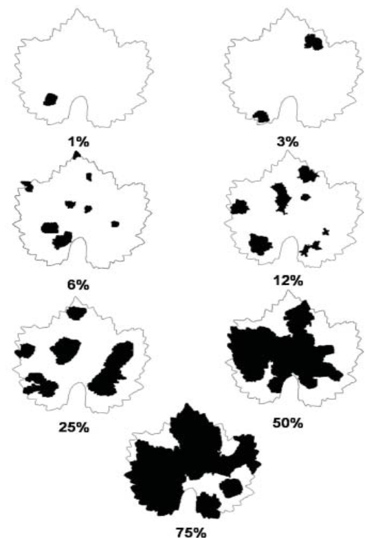

Observations mildiou - Méthode EPPO
Objectif
Les observations de maladies, en particulier mildiou et oïdium (principales maladies cryptogamiques de la vigne) permettent d’évaluer l’efficacité des stratégies de protection, comprendre la dynamique des maladies, ou encore caractériser la sensibilité variétale…
Principe de la mesure
Les observations visuelles sont réalisées régulièrement en notant la présence et la sévérité des symptômes de maladies. La méthode de mesure présentée dans cette fiche est décrite dans [1], et [2].
Sur le terrain
Échantillonnage
Nombre d’observations
Sur feuilles, observer 100 feuilles pour chaque répétition.
Sur grappes, observer 50 (essai en conditions contrôlées) à 100 grappes (essai en conditions naturelles) pour chaque répétition.
Ceps à observer
- Prendre des ceps représentatifs de la parcelle (ou les ceps qui sont observés par ailleurs)
- Laisser quelques ceps en bordure de rangs.
Organes à observer
Feuilles et grappes de chaque cep.
Mesure
Réalisation
Sur chaque feuille ou grappe échantillonnée aléatoirement, la proportion de feuille ou de baies atteinte par la maladie est estimée visuellement.

Ne pas oublier de noter aussi le nom de l’observateur, la date d’observation et le stade phénologique.
Outils
Feuille de notation.
Certaines applications existent pour la saisie terrain sur smartphone.
Période de mesure
Les comptages précis peuvent être réalisés à tout moment, en fonction de l’évolution de l’épidémie maladie et à partir d’un seuil minimal d’attaque.
En tout début d’épidémie, lorsque les symptômes sont peu nombreux, on peut compter l’ensemble des tâches présentes par répétition.
Sur grappes, les comptages peuvent être réalisés :
- sur inflorescence
- à la nouaison (rot gris)
- avant le début de la véraison (rot brun)
Aspects pratiques
La notation est assez rapide, environ 5 minutes sont nécessaires à deux personnes (un observateur entrainé et un notateur) pour observer 100 feuilles ou 50 grappes.
L’évaluation visuelle de la proportion de baies ou de surface atteinte par la maladie repose sur une interprétation humaine et peut varier fortement d’un observateur à l’autre. Il est nécessaire :
- de s’entraîner au préalable, au champ et avec des échelles calibrées
- de contrôler le facteur observateur dans la réalisation des notations, par exemple réalisant toutes les notations d’un bloc par le même observateur.
Traitement des résultats
Variable1 brute
La sévérité S (severity en anglais) est la surface de feuille ou de grappes attaquée par la maladie, exprimée en pourcentage de la surface totale de la feuille (PM_LEAF_PC) ou de la grappe (PM_BER_PC). C’est la variable brute observée.
Variables calculées
Les variables suivantes peuvent être calculées par répétition [4] :
La fréquence F (incidence en anglais) : nombre de feuilles ou de grappes présentant des symptômes de maladies exprimé en pourcentage du nombre total de feuilles ou de grappes observées.
L’intensité d’attaque I (intensity en anglais) : moyenne des sévérités observées sur l’ensemble des grappes ou feuilles observées.
Interprétation des résultats
L’interprétation des résultats doit tenir compte de la pression locale de maladie (qui dépend en grande partie de l’historique météorologique) et de l’itinéraire technique de protection phytosanitaire sur la parcelle.
Compléments d’information
Ressources complémentaires
Plateforme ephytia pour aide à la reconnaissance des symptômes de maladie sur vigne.